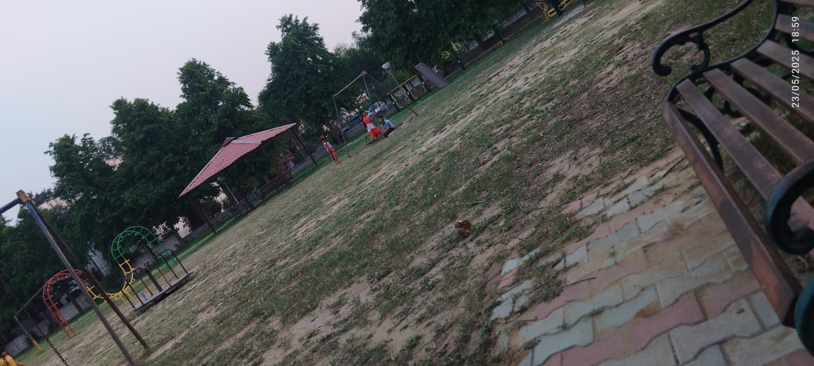

May 23, 2025
Today felt... a bit better. Not sunshine-and-rainbows better, but just enough to breathe and keep going.
I started the day with maths — which used to be one of my fav subjects. But these days? Can’t say the same. Still, I tried. That's what matters, right?
üíª Tech Stack Trials
I attempted to level up my blog website ‚Äî tried adding a dark/light toggle switch. And surprise surprise... it worked üòé
Despite all the other stuff going on, I still managed to add the toggle button on this blog page only for now. Will implement it on the full website as soon as possible!
Buuut my obsession with perfection made me drop it midway. It wasn‚Äôt looking exactly how I imagined, and I couldn‚Äôt settle. As mom always says, ‚ÄúIf something‚Äôs bugging you, pause. Come back later.‚Äù So I listened to her. For once. üòÖ
üí≠ Real Talk
Python? Yup, showed up again today — part of the syllabus grind. Not something that thrilled me, but I did it anyway. No skipping.
More than anything, I’m learning to move forward. Even when it’s hard. Even when I feel like I’ve failed. Because honestly, giving my best is the only option left on the table.
üå≥ Park Peace
I went to the NITJ park today. And ohhh, those little kids, laughing and running around? Their joy is so pure. I literally paused and smiled like a fool. It’s these tiny moments that remind me — life still has softness, even on tough days.
Captured: 23/05/2025, 6:59 PM. little children, big smiles. üòä